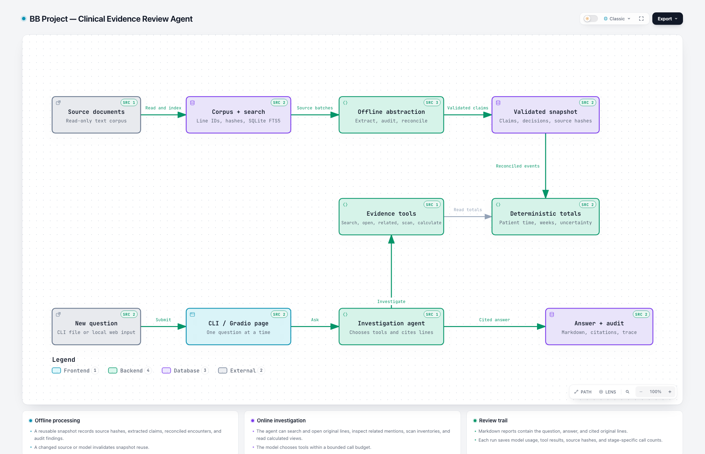

Source-linked clinical evidence review
Ask a record. See the answer and its evidence.
BB Project turns text records into a reusable, source-audited abstraction, then uses a bounded investigation agent to answer new questions with citations and reviewable calculations.
System map
From documents to auditable answers
The interactive architecture shows the offline abstraction, deterministic calculations, online agent, evidence tools, and report trail. Its components link to verified repository source lines.

Open the diagram to inspect components, source links, and the path from a new question to a cited answer.
Method
One preparation step, many new questions
Document processing is retained across questions while each answer can investigate the original source lines.
Prepare source evidence
Index line-addressable documents, extract claims, reconcile encounters, and preserve conflicting evidence.
Investigate each question
The agent chooses search, source, related-record, inventory, and calculation tools as needed.
Review the answer
Each report includes the question, cited answer, original source lines, and online model-call count.
Reviewed examples
Answers you can inspect
The five original questions and 22 independent questions each have a full question, answer, and evidence report.
| Original question | Reviewed result | Report |
|---|---|---|
| Therapy encounters | 12 sessions on 11 days: 5 individual, 5 group, 2 family | DEV-01 |
| Therapy time | 585–595 patient-present minutes across the review period | DEV-02 |
| Weekly goal | Not met, not met, met, and undetermined across four weeks | DEV-03 |
| January 19 and 21 | Two contacts and 90 minutes; one contact and 45 minutes | DEV-04 |
| Symptom course | Three distinct PHQ-9 scores: 18, 14, and 10 | DEV-05 |